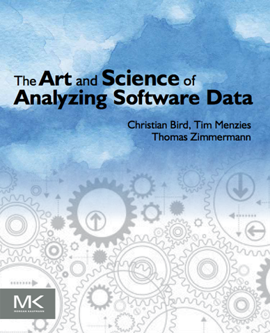
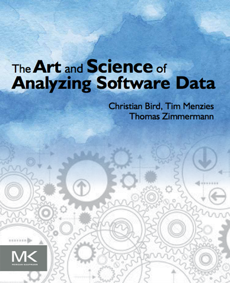

home | pre-prints | papers | lab

Tim Menzies
Prof (full). Ph.D. Computer Science.
SE, AI, data mining, prog. languages.

News
June 5: New faculty award from IBM: $40K
June 2: Three papers accepted to FSE'17. Well done team! More... May 29: New NSF (medium) award: $900K More... May 23: Given inaugural foundational contribution award for MSR More... May 11: RE'17 accepts 'SHORTer reasoning about larger requirements model' More... May 10: NSF agrees to fund our SWAN'17 meeting. More... May 6: Better software analytics via intelligence data rebalancing (SMOTE+DE). More... Apr 20: ASE journal accepts paper (with minor revision): 'Faster Discovery of Faster System Configurations with Spectral Learning' More... Apr 2: Career funding tops $9M More... Mar 27: Video of my London talk, 'Analytics Without SBSE Considered Harmful' More... Mar 24: Journal paper accepted to IST: Minimizing Code Reorganization More... Mar 19: Just won: the inaugural MSR Foundational Contibution Award More... Mar 10: FSE accepts our proposal to run SWAN'17 More... Feb 27: Invited to give keynote, University College, London More... Feb 22: Workshop accepted to HICSS'18: Frontiers of AI and SE Feb 19: New: using bad learners to find good configurations More... Feb 18: New: many models are controlled by a handful of key decisions More... Jan 13: New gift from Lexis Nexis: $60K extension to SElab Jan 10: Invited to speak, NSF PI meeting, Software Infrastructure for Sustained Innovation, Feb 21, 2017 More... Jan 08: Invited to editorial board, Journal of Software and Systems Dec 20: Journal paper accepted: Discovering API Methods thru Text Mining; Software:Evol+Process with Pandita et al. Dec 10: New tech report: How to Read Less: Better Machine Assisted Reading Methods More... Dec 5: New tech report: Impact of Bad Early Size Predictions on Effort Estimation More... Dec 1: Invited to the program committee of the 2017 Automated Software Engineering conference. More... Nov 26: $75K gift from Lexix Nexis for advanced analytics Nov 22: Journal article published: 'Negative results about Effort Estimation'. More... Nov 17: 3 NSF submissions in one month is more than enough. !! Nov 14: Journal article published: 'Are delayed issues harder to resolve? Revisitingcost-to-fix of defects throughout the lifecycle'. More... Now 13: Gave keynote, International Workshop on Software Analytics More... Oct 30: Invited to the program committee of the Systems and Software Project Line conference, 2017. Oct 27: Most-cited research at NCSU CS, 2 months in a row. More... Oct 26: Invited to MSR'17 program committee More... Oct 19: Two NSF medium proposals submitted. Now crossing all fingers+toes. Oct 12: Appointed co-PC chair for Symposium on Search-Based Software Engineering (SSBSE'17) More... Oct 7: Successfully completed ICSME'16 as co-general chair. More... Sept 20: Paper accepted with minor revisions, EMSE journal, Negative Results about Effort Estimation More... Sept 16: Invited to give keynote, 2nd Int. Workshop on Software Analytics (SWAN 2016) in Nov More... Sept 15: Recommendations for Intelligence Core Reorganization. Sent to IST journal More... Sept 9: Why DE is better than grid search. Sent to IST journal. More... Sept 7: My new book is here. More... Sept 1: I'm now an author of a top 100 most cited/year papers in SE More... Aug26: Breakthrough in multi-objective optimization Sent to TSE More... Aug26: 9000+ SE conference papers clustered. Sent to ICSE'17 More... Aug26: How to fix topic modeling in SE. Sent to ICSE'17 More... Aug24: New gift, $60K, Lexis Nexis, Industrial Text Mining Aug15: New grant, $85K, Learning Analytics Sciences, Data sharing and privacy Aug13: Paper accepted with minor revisions, EMSE journal, Phase Delay and SE More... Jul 28: Invited to program committee ICSE'18 More... Jul 8: New appointment: editorial board Journal of Big Data research More... Jun 22: New appointment: editorial board IET journal More... May 16: Keynote address, Search-based Testing, ICSE'16 More... May 15: Tutorial, ICSE: How not to do SE Data Science More... May 12: New appointment: editorial committee IST journal

Office:3298,eeII,map
Cell: 304-376-2859
Fax: 919-515-7896
Mail: Com.Sci., 890 Oval Dr, Raleigh, NC, USA,
27695-8206.

June 5: New faculty award from IBM: $40K
June 2: Three papers accepted to FSE'17. Well done team! More...
May 29: New NSF (medium) award: $900K More...
May 23: Given inaugural foundational contribution award for MSR More...
May 11: RE'17 accepts 'SHORTer reasoning about larger requirements model' More...
May 10: NSF agrees to fund our SWAN'17 meeting. More...
May 6: Better software analytics via intelligence data rebalancing (SMOTE+DE). More...
My Books
 
